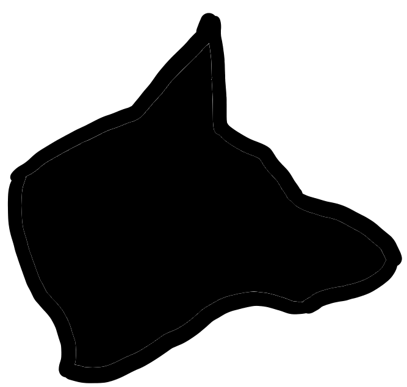

An exploration of storytelling, memory, and technology
THE MOON
The Missing Image
Type: Interactive text
Time: 10-40 minutes
Summary: Play as a character who experiences the memory of an art gallery. Elements beyond your control change on each recollection, casting doubt on the idea that hindsight brings you clarity.

THE DOG
Canary Sky
Type: Interactive Journal
Time: 10 minutes
Summary: Explore the audio messages of A as she travels the skies of a strange, futuristic world.

Type: Text-based video game
Time: 35 minutes
Summary: A coming-of-age story where you don't make any new decisions. Rather, you choose how to remember your past. In doing so, you form your monstrous form: the sharp edges of your past that haven't been smoothed over.
THE WOLF
Monstrous
Type: Text-based video game
Time: 35 minutes
Summary: A coming-of-age story where you don't make any new decisions. Rather, you choose how to remember your past. In doing so, you form your monstrous form: the sharp edges of your past that haven't been smoothed over.